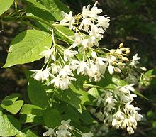
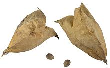

Native to Republic of Georgia, this small tree (to 10 feet) produces panicles of small white bell shape flowers that develop into bladder-like fruit containing seeds. The flowers are edible and decorative in salads. They are much sought after in Georgia for use as pickled appetizers. The seeds can be pressed to yield an edible oil. The seeds are about 1/4 inch long.
The picking season starts in early May, and this usually results in some Georgians detained by Russian border guards in breakaway South Ossetia. They are handed over to Ossetian authorities and face a fine of about 2000 Russian rubles (US $30) for crossing the border, but back in 2011 a group of 12 was fired upon with 2 killed and 4 wounded.
More on Bladdernut Family.
|
  |
This is a light brine pickle with an interesting and unusual lightly floral taste, remotely suggestive of capers. It is often served with chopped red onion, olive oil, pepper, and sometimes other pickled vegetables. It is considered a "must have" for a Georgian supra (traditional feast table). They are similarly served in Armenia and in Georgian restaurants in Russia. In Georgia they are sometimes used as a garnish for Georgian Lobiana (Bean Soup). Buying: Here in Southern California pickled Jonjoli are occasionally available in markets serving a Georgian / Armenian community, usually labeled "Capers in Brine". Well, they are pickled in brine, but they certainly aren't capers, nor related to capers. The photo specimens were purchased in a 26 ounce jar from a multi-ethnic market in Los Angeles (Sunland) for 2016 US $5.69 for the jar. Ingred: "Capers", salt, garlic, wine vinegar, pepper, spices. If you want to buy them on-line, search for "Georgian Capers". Photo of Jonjoli flowers by Michael Wolf distributed
under license Creative Commons
Attribution 3.0 Unported.
|